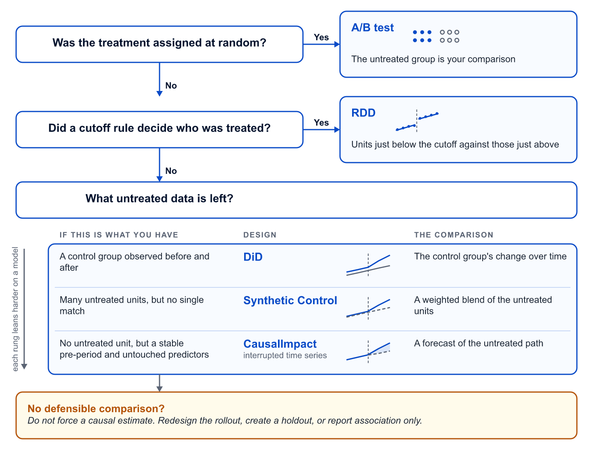

3.3 Quasi-Experimente
Über die deutsche Ausgabe
Diese Seite ist eine KI-Übersetzung der englischen Ausgabe von Marketing Science in Python. Die englische Ausgabe ist maßgeblich und hat bei Abweichungen Vorrang. Code, Notebooks und Text in Abbildungen bleiben auf Englisch. Englische Ausgabe lesen
Der A/B-Test ist der Goldstandard, um Ursache und Wirkung zu messen. Randomisieren Sie, wer das Treatment bekommt, und die Kontrollgruppe sagt Ihnen, was ohne das Treatment passiert wäre. Aber Sie können nicht immer einen durchführen. Wie in Abschnitt 3.1 beschrieben, gibt es viele Gründe, aus denen ein A/B-Test keine Option ist.
Wenn Sie nicht randomisieren können, verwenden Sie ein Quasi-Experiment. Ein Quasi-Experiment schätzt Ursache und Wirkung ohne zufällige Zuweisung. Es arbeitet mit dem Vergleich, den der Geschäftsprozess hinterlassen hat: einer Schwelle, einem Rollout, der manche Einheiten ausgelassen hat, einem Startdatum. Genau darin liegt der Haken. Ein nicht zufälliger Rollout ist nicht automatisch ein brauchbares Quasi-Experiment. Er muss einen Vergleich hinterlassen, dessen Annahmen Sie verteidigen können, und jedes Design in diesem Kapitel bringt die Annahme mit, die Sie werden verteidigen müssen.
Dieses Kapitel behandelt drei Designs: Regression Discontinuity (RDD), Difference-in-Differences (DiD) und synthetische Kontrolle. Jedes braucht unbehandelte Einheiten zum Vergleich: eine Kontrollgruppe von Filialen, die das Display nicht bekommen haben, oder einen Pool von Filialen, die zu einer einzigen verschmolzen werden. Das vierte Design, CausalImpact, ist für den Fall, dass es überhaupt keine unbehandelten Einheiten gibt. Es bekommt das nächste Kapitel.
Welches Design passt zu Ihrer Situation?
Vier Designs sind eine große Auswahl, und die Namen verraten nicht, welches Sie brauchen. Legen wir sie also alle auf ein konkretes Problem. Ein Händler hat 100 Filialen. Er hat ein neues Display im Laden ausgerollt und will wissen, was das Display mit dem Kategorieumsatz gemacht hat.
Die erste Frage ist immer dieselbe: Wurde das Display zufällig zugewiesen? Wenn ja, sind die unbehandelten Filialen Ihre Kontrollgruppe, und Sie sind zurück in Abschnitt 3.2. Wenn nicht, bestimmt die Art der Zuweisung das Design.
| Wer das Display bekam | Design | Der Vergleich |
|---|---|---|
| 50 Filialen, zufällig ausgewählt | A/B-Test | Die anderen 50 |
| Jede Filiale mit über $1M Jahresumsatz | RDD | Filialen knapp unter $1M gegen die knapp darüber, und nur diese |
| 50 Filialen, vom Vertriebsteam ausgewählt | DiD | Die anderen 50, vorher gegen nachher |
| Nur die Filiale in New York | Synthetische Kontrolle | Eine gewichtete Mischung der anderen 99, angepasst an die früheren Umsätze |
| Alle 100, am selben Tag | CausalImpact (nächstes Kapitel) | Eine Prognose aus der eigenen Historie der Kette und aus Marktreihen, die das Display nicht beeinflussen konnte |
In jeder Zeile stehen dieselben 100 Filialen. Was sich ändert, ist, wie das Display zugewiesen wurde, und das bestimmt sowohl das Design als auch die Daten, die Sie brauchen: die Zuweisungsvariable (Running Variable) für RDD, ein Vorher-Nachher-Panel für DiD, eine lange Vorperiode und einen Pool unbehandelter Filialen für die synthetische Kontrolle. Fünfzig zufällig ausgewählte Filialen und fünfzig vom Vertriebsteam ausgewählte können dieselbe Tabelle ergeben, und nur die erste ist ein Experiment. Das ist die Regel für das ganze Kapitel. Die Zuweisung bestimmt das Design. Die Daten entscheiden dann, ob das Design glaubwürdig ist.
Diese Tabelle zeigt die fünf Optionen eines Händlers. Abbildung 1 macht daraus einen Wegweiser für jeden Rollout: zwei Ja-oder-Nein-Fragen, dann eine Wahl, die davon abhängt, wie viele unbehandelte Daten Ihnen noch bleiben.

Die vier Designs sind auch keine vier unverbundenen Tricks. Eines davon, RDD, nutzt eine Schwelle und sonst nichts. Die anderen drei bilden eine Leiter. DiD leiht sich den Trend der Kontrollfilialen. Die synthetische Kontrolle mischt Kontrollfilialen zu einem besseren Vergleich, wenn keine einzelne genügt. CausalImpact prognostiziert den Vergleich, wenn es überhaupt keine Kontrollfilialen gibt. Jede Sprosse stützt sich stärker auf ein Modell. Dieses Kapitel behandelt RDD und die ersten beiden Sprossen.
Regression Discontinuity (RDD)
Kernidee: Direkt um die Schwelle herum ist die Zuweisung so gut wie zufällig.
Beginnen wir mit der zweiten Zeile von Tabelle 1. Statt die Filialen auszuwählen, hat das Vertriebsteam eine Regel aufgestellt: Jede Filiale mit über $1M Jahresumsatz bekommt das neue Display. Die Pilotfilialen sind damit per Konstruktion die größten Filialen. Sie mit dem Rest zu vergleichen würde nur messen, wie es ist, groß zu sein.
Aber sehen Sie sich die Filialen nahe der Linie an. Eine Filiale mit $1.02M und eine mit $0.98M sind etwa gleich groß, bedienen ähnliche Kunden und fahren ähnliche Promotions. Auf welcher Seite von $1M sie gelandet sind, ist fast ein Münzwurf. RDD behandelt es als einen. Es vergleicht die Ergebnisse knapp über der Schwelle mit den Ergebnissen knapp darunter, und wenn der Kategorieumsatz bei $1M springt, ist der Sprung der Effekt des Displays. Dieselbe Logik funktioniert bei Kunden: Wenn Kunden mit mindestens $500 früherer Ausgaben einen Coupon bekommen, vergleichen Sie die Kunden mit $502 mit denen mit $498.
Wann RDD nicht funktioniert
RDD braucht viele Einheiten nahe der Schwelle, weil es nur diese nutzt. Bei 100 Filialen liegen vielleicht zehn innerhalb weniger Prozent um $1M, und das ist zu dünn, um auf jeder Seite eine Linie anzupassen und einen Sprung über dem Rauschen zu erkennen. Bei 20,000 Kunden nahe $500 ist es das nicht. Deshalb ist RDD im Marketing vor allem ein Werkzeug auf Kundenebene: Coupons oder Punkte auf Basis früherer Ausgaben, Lead-Score-Schwellen für die Vertriebsansprache. Abbildung 2 zeigt diese Variante.

Zwei weitere Grenzen. Der Effekt ist lokal: Der Sprung bei $500 sagt, was der Coupon für Kunden bewirkt hat, die etwa $500 ausgeben, nicht für Kunden, die $5,000 ausgeben. Und die Einheiten dürfen sich nicht selbst über die Linie bewegen können. Wenn ein Bonusprogramm Kunden bei $1,000 in die nächste Stufe befördert und die Kunden das wissen, machen manche im Dezember einen zusätzlichen Kauf, um darüberzukommen. Wenn ein Filialleiter einen Bonus für das Erreichen von $1M bekommt, finden Filialen, die im November bei $0.97M stehen, einen Weg, bei $1.01M abzuschließen. In beiden Fällen sind die Einheiten knapp über der Schwelle diejenigen, die sich mehr angestrengt haben, und RDD liest das als Effekt des Treatments. Ein Histogramm der Zuweisungsvariable mit einer Häufung knapp über der Schwelle ist das verräterische Zeichen. An einer solchen Schwelle kann RDD nicht verwendet werden.
Difference-in-Differences (DiD)
Kernidee: Vergleichen Sie Veränderungen, nicht Niveaus. Die Veränderung der Kontrollgruppe über die Zeit steht für das, was die behandelte Gruppe getan hätte.
Nun die dritte Zeile von Tabelle 1: Das Vertriebsteam hat 50 Filialen für das neue Display ausgewählt, und 50 vergleichbare Filialen behielten das Standard-Regallayout. Sie haben den Kategorieumsatz pro Filiale, vor und nach dem Rollout, für beide Gruppen.
Die Pilotfilialen gingen von $42k auf $48k. Das Display ist also $6k pro Filiale wert?
Wahrscheinlich nicht. Die Vergleichsfilialen gingen ganz ohne Display von $40k auf $43k. Irgendetwas hat die gesamte Kategorie um etwa $3k angehoben: Saisonalität, Kundenfrequenz, ein Lieferengpass beim Wettbewerber. Ein Vorher-Nachher-Vergleich allein auf den Pilotfilialen verbucht dieses Marktwachstum als Display-Effekt.
Vergleichen wir also stattdessen die beiden Gruppen nach dem Rollout. $48k gegen $43k sind $5k. Ist das der Effekt?
Auch nicht. Die Pilotfilialen lagen schon vorher $2k vorn, mit $42k gegen $40k, bevor irgendetwas passiert war. Das Vertriebsteam hat nicht zufällig ausgewählt, und ein Vergleich von Treatment gegen Kontrolle in der Nachperiode verbucht diesen Vorsprung als Display-Effekt.
Jeder naive Vergleich scheitert an einem anderen Confounder. Vorher-gegen-Nachher fängt den gemeinsamen Zeittrend ein. Treatment-gegen-Kontrolle fängt den vorbestehenden Abstand zwischen den Gruppen ein. Nehmen Sie die Differenz der beiden Differenzen, und beide heben sich auf:
| Filialgruppe | Vorher | Nachher | Veränderung |
|---|---|---|---|
| Pilotfilialen | $42k | $48k | +$6k |
| Vergleichsfilialen | $40k | $43k | +$3k |
| DiD-Schätzung | +$3k |
Die Pilotfilialen wuchsen um $6k, die Vergleichsfilialen um $3k, und die Differenz ist $3k. Andersherum bekommen Sie dieselbe Antwort: ein Abstand von $5k nachher minus ein Abstand von $2k vorher. Das ist Difference-in-Differences. Der gemeinsame Trend hebt sich auf. Ebenso jeder feste Unterschied zwischen den Gruppen. Was bleibt, ist der Teil der Veränderung in den Pilotfilialen, den die Vergleichsfilialen nicht erklären können.
Im Code ist die Schätzung nichts anderes als diese beiden Differenzen:
import pandas as pd
did = pd.DataFrame({
"group": ["Pilot stores", "Comparison stores"],
"before": [42, 40], # category sales per store, $k
"after": [48, 43],
})
did["change"] = did["after"] - did["before"] # +6 and +3
did_estimate = did.loc[0, "change"] - did.loc[1, "change"]
print(f"DiD estimate: ${did_estimate}k") # DiD estimate: $3kDiD passt zu den meisten Situationen im Marketing, in denen „manche Einheiten sich geändert haben, andere nicht“: Display-Piloten in Filialen, Regalumbauten, regionale Promotion-Rollouts, Preisänderungen in ausgewählten Märkten, ein App-Feature, das zuerst auf einer Plattform gestartet wird.
Die Annahme paralleler Trends
DiD beruht auf parallelen Trends (auch gemeinsame Trends genannt): Ohne das Treatment wären beide Gruppen demselben Trend gefolgt. Trend, nicht Niveau. Die Gruppen können auf unterschiedlichen Umsatzniveaus starten, wie es die Pilotfilialen tun. Entscheidend ist, dass die Veränderung der Vergleichsgruppe nach dem Rollout ein fairer Stellvertreter für das ist, was die Pilotfilialen von sich aus getan hätten.
Vollständig überprüfen können Sie das nie, weil Sie die Pilotfilialen ohne das Display nicht beobachten. Aber Sie können die Periode vor dem Rollout prüfen.

Tragen Sie beide Gruppen über die Zeit auf und betrachten Sie den Teil vor dem Display. Wenn sich die beiden Linien gemeinsam bewegen, ist DiD glaubwürdig. Ein sauberer Vortrend ist eine Glaubwürdigkeitsprüfung, kein Beweis, aber es ist die Prüfung, nach der alle fragen werden.
Wann DiD nicht funktioniert
DiD scheitert, wenn das Vertriebsteam nach Momentum ausgewählt hat. Wenn es Filialen gewählt hat, die ohnehin schon schneller wuchsen, teilen die beiden Gruppen keinen Trend, und die DiD-Schätzung schreibt sich Wachstum zu, das sowieso gekommen wäre. Sie sehen es im Diagramm der Vorperiode: Die Linien liefen schon vor dem Display auseinander. Wenn das passiert, erzwingen Sie DiD nicht. Matchen Sie die Gruppen sorgfältiger, gewichten Sie die Vergleichsfilialen oder wechseln Sie zur synthetischen Kontrolle.
DiD mit einer Regression schätzen
Die Zwei-mal-zwei-Tabelle ist die Idee. Berichten würden Sie sie nicht, aus zwei Gründen. Sie liefert keinen Standardfehler, also können Sie nicht sagen, ob sich +$3k von null unterscheiden lässt. Und echte Daten sind nicht zwei Perioden; es sind 24 Monate Umsatz für 100 Filialen. Die Regressionsvariante bewältigt beides. Eine Zeile pro Filiale und Monat, ein fixer Effekt für jede Filiale, ein fixer Effekt für jeden Monat und ein Interaktionsterm für behandelte Filialen in der Nachperiode. Die Filialeffekte absorbieren jeden festen Unterschied zwischen den Filialen. Die Monatseffekte absorbieren jeden Trend und jeden Schock, der in diesem Monat alle Filialen getroffen hat. Der Interaktionsterm ist die DiD-Schätzung.
import statsmodels.formula.api as smf
# df: one row per store-month (store_id, period, treated, post, category_sales)
model = smf.ols(
"category_sales ~ C(store_id) + C(period) + treated:post",
data=df,
).fit(cov_type="cluster", cov_kwds={"groups": df["store_id"]})
coef, se = model.params["treated:post"], model.bse["treated:post"]
print(f"DiD estimate: {coef:.2f} (SE {se:.2f})") # DiD estimate: 3.02 (SE 0.04)Das Clustern des Standardfehlers nach Filiale berücksichtigt die wiederholten Messungen je Filiale. Dieselbe Regression prüft die Vortrends: Ersetzen Sie treated:post durch je einen treated × Monat-Term pro Monat und bestätigen Sie, dass die Terme vor dem Rollout nahe null liegen. Das Begleit-Notebook geht das vollständige Panel und diese Prüfung durch.
Synthetische Kontrolle
Kernidee: Wenn keine einzelne Kontrolleinheit passt, bauen Sie eine, indem Sie mehrere mischen.
DiD hat funktioniert, weil 50 Kontrollfilialen Ihnen einen überzeugenden Trend zum Ausleihen gaben. Nehmen wir jetzt die vierte Zeile von Tabelle 1: Nur die Filiale in New York hat das Display bekommen. Welche der anderen 99 Filialen ist der richtige Vergleich? Sie unterscheiden sich in Größe, Kategoriemix und lokalem Wettbewerb, und keine einzelne Filiale ist ein überzeugender Stellvertreter für New York.
Die synthetische Kontrolle wählt keine einzelne aus. Sie behandelt die anderen 99 Filialen als Donor-Pool und baut ein „synthetisches New York“ als gewichtete Mischung aus ihnen, wobei die Gewichte so gewählt werden, dass die Mischung den Umsatz von New York vor dem Einbau des Displays so genau wie möglich nachzeichnet. Im Begleit-Notebook ergibt sich die Mischung als 36% der Filiale in Boston, 28% Philadelphia, 22% Chicago und ein paar Prozent verteilt auf vier weitere Filialen. Sobald das Display eingebaut ist, ist der Abstand zwischen dem tatsächlichen New York und seinem synthetischen Zwilling der geschätzte Effekt.

Es ist das natürliche Design, wann immer eine Einheit das Treatment bekommt und viele ähnliche Einheiten nicht: eine umgebaute Filiale, ein Ballungsraum mit einer Außenwerbekampagne, eine SKU mit einer Preisänderung und ihre Geschwister-SKUs als Donoren. Diese Designs auf Geo-Ebene kehren in Abschnitt 6.3 als Robustheitsprüfung für Geo-Experimente und in Abschnitt 6.4 als Kalibrierungsanker für Medienmix-Modelle zurück.
Wann die synthetische Kontrolle nicht funktioniert
Die Glaubwürdigkeitsprüfung ist die Anpassung in der Vorperiode. Wenn keine Mischung der 99 Filialen die Historie von New York vor dem Display reproduzieren kann, trauen Sie dem Abstand danach nicht. Die Donoren müssen außerdem unberührt sein: Ein Display in New York bewegt den Umsatz in Chicago nicht, aber eine TV-Kampagne in New York könnte New Jersey erreichen, und ein Donor, der das Treatment abbekommen hat, zieht den synthetischen Zwilling in Richtung des behandelten Pfads. Und mit einem einzelnen Kunden geht es nicht. Die wöchentlichen Ausgaben eines einzelnen Kunden bestehen überwiegend aus Nullen und Rauschen, und keine Mischung anderer Kunden wird sie nachzeichnen. Fragen auf Kundenebene brauchen viele Kunden, und das ist das Gebiet von DiD oder RDD.
Wenn es keine Kontrollgruppe gibt
DiD hat sich einen Trend von Kontrollfilialen geliehen. Die synthetische Kontrolle hat Kontrollfilialen gemischt, wenn keine einzelne genügte. RDD hat Filialen knapp unter einer Linie mit Filialen knapp darüber verglichen. Alle drei leihen sich den Vergleich von Einheiten, die die Maßnahme nicht erreicht hat, und keines von ihnen kann helfen, wenn sie alle erreicht hat:
- Das neue Display kam am selben Tag in alle 100 Filialen.
- Die Kampagne lief in jeder Region, nicht nur in einigen.
- Der Coupon ging an jeden Kunden.
Es gibt keine unbehandelte Filiale, keine unbehandelte Region und keinen unbehandelten Kunden zum Vergleich. Also muss der Vergleich prognostiziert werden: daraus, was die Zeitreihe vor der Maßnahme getan hat, und daraus, was andere Reihen, die die Maßnahme nicht beeinflussen konnte, danach getan haben. Das ist die letzte Sprosse der Leiter, CausalImpact, und sie ist das nächste Kapitel.
Begleit-Notebook: sec3.3_quasi_experiments.ipynb arbeitet RDD, DiD (Tabelle, Regression und Vortrend-Prüfung) und synthetische Kontrolle auf synthetischen Daten mit statsmodels und scipy durch.
Auf GitHub ansehen
Das Wichtigste in Kürze
- Die Zuweisung bestimmt das Design. Randomisieren Sie, und Sie haben einen A/B-Test; eine Schwelle ergibt RDD; alles andere steigt eine Leiter hinauf von DiD über die synthetische Kontrolle bis zu CausalImpact, wobei sich jede Sprosse stärker auf ein Modell stützt.
- Ein Quasi-Experiment ist nur so glaubwürdig wie seine Identifikationsannahme. Ein Vortrend-Diagramm oder eine Anpassung in der Vorperiode kann ein schwaches Design entlarven, aber eine solche Prüfung zu bestehen ist eine Glaubwürdigkeitsprüfung, kein Beweis.